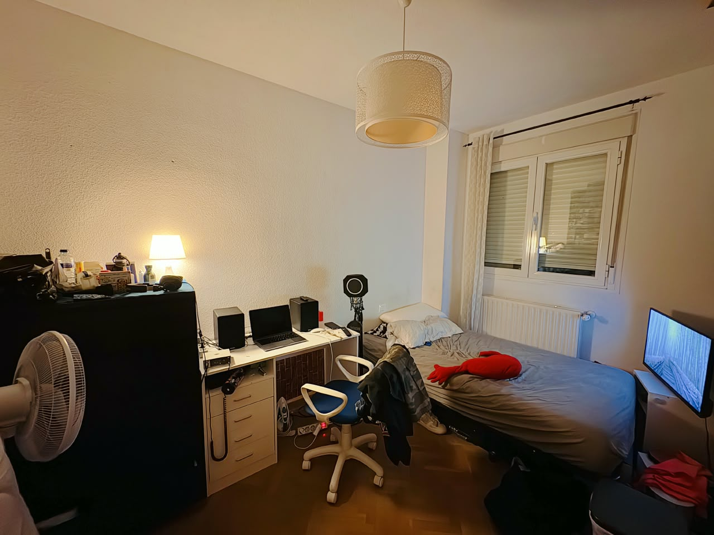
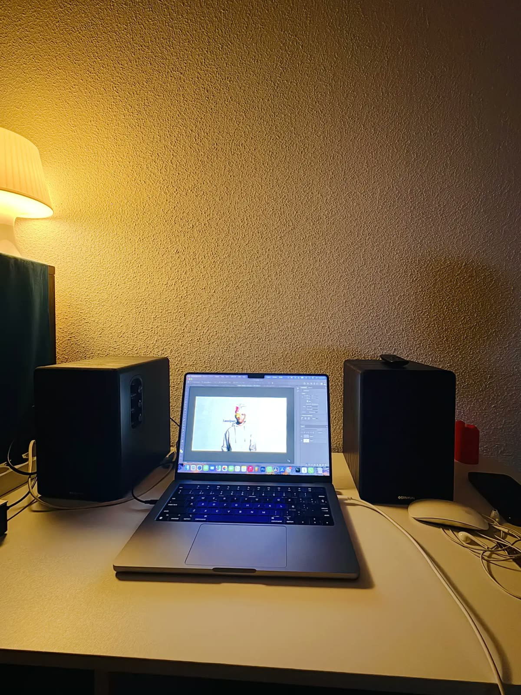

Las historias están en los objetos.
El portátil guarda proyectos, galería y contacto. Los altavoces tienen música; la cama, algo más personal. La lámpara cambia la luz y la ventana activa el modo noche. Sobre el escritorio puedes acercarte, y el suelo lleva a The Okay Ground.
Usa Tab para explorar, Enter para abrir y Esc para volver. Las teclas 1–5 abren cada objeto, H activa las pistas y ← → recorren la galería.Toca cualquier punto para abrir ese objeto, o usa “Secciones”. Desliza la ventana hacia abajo para volver. “Ver pistas” marca todos los objetos.